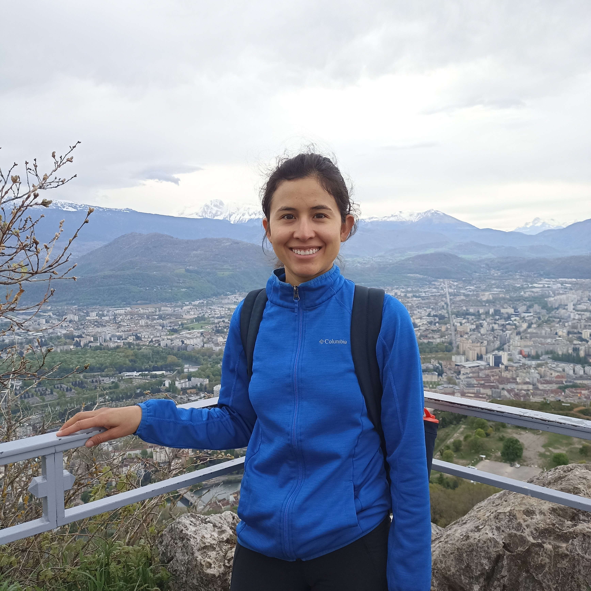
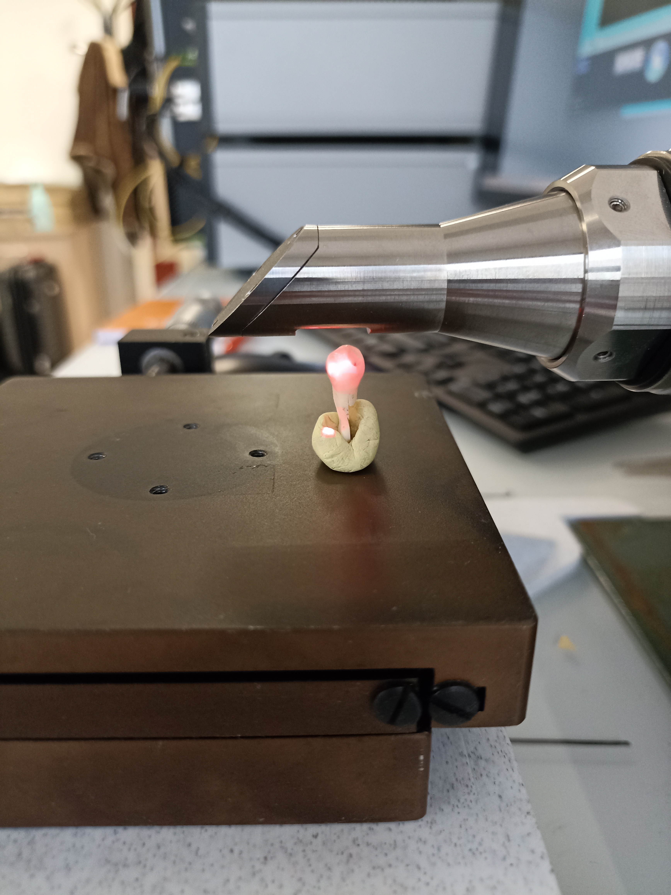

Materials Science & Imaging Research
I use advanced imaging and analysis to understand how material microstructure controls properties and performance.
View my work →About me

Postdoctoral Researcher · Department of Dentistry · University Paris Cité – CentraleSupélec
Hello! My name is Nelly Vanessa Padilla Bello and I am a postdoctoral researcher at the University of Paris Cité, in collaboration with the LMPS laboratory at CentraleSupélec, Paris, France.
I hold a Ph.D. in materials science with experience in multimodal and multiscale characterization of materials.
My current project focuses on the characterization of pathological tissues at different scales to understand the impact of disease on the physicochemistry and microstructure of tissues. The goal is to adapt laboratory techniques to clinical applications and ultimately support dentists in improving diagnosis and treatment decisions.
I also teach practical courses (TP) in microstructure characterization, with a focus on bone microstructure and mechanics, and supervise student projects across various subjects.
Research projects
A selection of ongoing and completed research projects. Click to learn more about each one.

Combining Raman spectroscopy and Optical Coherence Tomography to support MIH diagnosis
Combining multi-scale imaging and material characterization techniques to establish links between microstructure, barrier performance, and adhesion in sustainable composite materials.
Studying microstructure–property relationships in bio-cemented soils by linking grain-scale contact geometry to tensile and shear stiffness using Abaqus simulations.
Describe your third project here. You can duplicate or remove these cards to match your actual number of projects.
Publications
Peer-reviewed articles, preprints, and conference papers.
Influence of basis weight and microfibril dimensions of microfibrillated cellulose (MFC) films on the microstructure, adhesion, and barrier properties of wet-laminated paper materials.
Investigated how MFC film basis weight and microfibril size affect the microstructure, adhesion, and barrier performance of cellulose-based multilayers using multimodal 3D characterization. Higher basis weight films made of finer microfibrils formed denser structures with improved barrier properties.
Influence of the microfibrils size on the adhesion properties of MFC films wet laminated onto paper and paperboard
Studied the microstructure–adhesion relationship in MFC-coated cellulose materials using multimodal characterization.
Multiscale characterisation of cellulose nanofibril networks using three 3D imaging methods
This work investigates the 3D microstructure of cellulose-based bilayer materials for sustainable food packaging using a multiscale imaging approach combining synchrotron X-ray micro-/nanotomography and FIB-SEM tomography. The study reveals that MFC films have a dense, non-connected pore structure and shows that films made with finer microfibrils exhibit lower porosity, a more homogeneous microstructure, and greater contact area with the paper, contributing to improved barrier properties.
Uncertainty in the determination of the volumetric block proportion of BIMrocks/ BIMsoils from one-dimensional information
This work investigates the uncertainty in estimating the Proportion of Volumetric Blocks (PVB) in heterogeneous Block-in-Matrix (BIMrock/BIMsoil) materials from borehole data. A computational algorithm was developed to assess how borehole number and length, as well as block shape and orientation, affect PVB estimation. The results show that increasing the extent of subsurface investigations reduces epistemic uncertainty regardless of block geometry, but a minimum level of uncertainty remains due to the inherent randomness of the material's natural formation.
Scientific dissemination
Oral presentations, posters, and invited talks at national and international conferences.
Raman + OCT Imaging: Towards a quantitative diagnosis of mih
LMPS PHD day · Laboratory LMPS / CentraleSupélec
Influence of microfibril size on the adhesion of a wet-laminated cellulose microfibril film to paper and paperboard
jst-interfaces : Interfaces / interphases dans les matériaux composites et les assemblages collés · AMAC / Association pour les Matériaux Composites
3D observation of (nano)-cellulose fibers network by multiscale imaging techniques:from nanometer to millimeter scale.
Interpore · International Sociaty of Porous Media
Advanced characterization of novel multilayer cellulose based material for food packaging
Interpore · International Sociaty of Porous Media
Education & mentoring
Practical courses, lectures, and student project supervision at university level.
Teaching Assistant – Practical Course (TP)
Microstructure Characterization · CentraleSupélec
Practical sessions on bone microstructure and mechanics, covering imaging techniques, sample preparation, and quantitative analysis. Students gain hands-on experience with microscopy and image processing tools.
Student Project Supervisor
Engineering projects
Supervision of student on engineering projects
Media
Figures, field photos, and video content from my research.
Caption for this figure or photo
Caption for this video
Caption for this figure or photo
Caption for this figure or photo
Notes & reflections
Short posts and thoughts I share on LinkedIn — research updates, behind-the-scenes, and ideas.
🔬 What is Porosity—and Why Does It Matter in Paper? 🧵
When Even X-ray Nano-Tomography Isn't Enough… Meet FIB-SEM Tomography